and is called OMEGA in the NONMEM printout. The random
intraindividual effects are denoted by
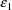
,
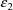
, etc. Their variance-covariance matrix is denoted by
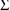
and is called SIGMA in the NONMEM printout.
and is called OMEGA in the NONMEM printout. The random
intraindividual effects are denoted by
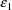
,
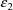
, etc. Their variance-covariance matrix is denoted by
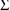
and is called SIGMA in the NONMEM printout.The NONMEM Project is an undertaking by researchers in the Schools of Medicine and Pharmacy of the University of California, San Francisco. The project is a continually evolving one, aimed at providing methodological results and computer tools for the analysis of data that may be described by regression type models with mixed effects, i.e. both fixed and random effects, any of which may enter the model nonlinearly. Data of this sort arise frequently in clinical pharmacological projects, and to various degrees in other scientific fields. They arise when there are multiple (or repeated) measurements taken on a number of experimental units.
Version III Level 1 of NONMEM, a computer program to analyze data using a nonlinear mixed effects model, is now being distributed. It is written in ANSI FORTRAN 77. It is reliable, and attention has been paid to the input of control information, to the output of results, and to program diagnostics. The inputs to the program consist of data files, control information, and user-coded subroutines. The required formats for these inputs are not, however, user-friendly. The NONMEM Project has paid more attention to the development of more important aspects of the program - that is until recently. At the same time as Version III is being distributed the NONMEM Project is also distributing for the first time another program, NM-TRAN, a preprocessor to NONMEM that translates inputs specified in a more user-friendly way to the formats required by NONMEM. This translator is documented in NONMEM Users Guide IV, NM-TRAN Guide. Also, much effort has been made to make NONMEM efficient. However, this efficiency is measured with respect to the types of computationally intensive tasks the program performs, tasks that sometimes call for using a large-scale computer, or a smaller dedicated machine.
Versions I-III incorporate an important methodological restriction. Although fixed effects may enter the model nonlinearly, random effects must enter the model linearly. Therefore, the goal described at the beginning of this section is not fully met. However, if a model is contemplated in which some random effects enter nonlinearly, it may often be approximated well-enough by a model in which all random effects enter linearly. This approximation is described in a number of references (Sheiner et al 1977, Beal, 1984a), as well as being illustrated in chapter F of this document. Research is in progress within the NONMEM Project that could lead to a future version of NONMEM in which this restriction is relaxed. Except for the example discussed in chapter F, all the examples in this document involve linearly occuring random effects.
Another program restriction concerns the number of possible levels of nesting of the random effects. NONMEM provides only one level of nesting. With one level of nesting there is one group of random effects and another group nested within the first group. This is usually adequate for pharmacokinetic and pharmacodynamic applications. One advantage of NONMEM over other programs for mixed effects models is that the random effects in the first group can be multivariate, and the random effects in the second group can be multivariate.
There really are two NONMEM programs, single- and double-precision versions. The user can choose to use either. Many problems with few parameters to be estimated can be run successfully with the single-precision version. Problems with many parameters usually need double-precision arithmetic. If the computational time requirement does not pose a particularly difficult problem, the user should simply use the double-precision version. This version is not simply the single-precision version with all floating-point variables and arrays declared double precision. Rather, care has been taken to use double-precision only where it is necessary. When the computational time requirement does pose a problem, the user might first try using single-precision. If a problem develops (see section C.3.5.1), then the user might try using double-precision.
This document, the Users Basic Guide, is first of a six part series of user documentation for the NONMEM system. The other five parts are:
Part II - Users Supplemental
Guide
Part III - NONMEM Installation Guide
Part IV - NM-TRAN Guide
Part V - NONMEM-PREDPP Introductory Guide
Part VI - PREDPP Guide
This first part contains the essential information about how to use NONMEM. It is presumed that the reader has had some previous experience with using a nonlinear regresssion type program and that he knows how to interpret the output from that program.
Part II contains supplemental information about using NONMEM, and Part III contains program installation information and describes the program file structure. Part IV is a reference guide for NM-TRAN (see section A.1). Part V is a primer designed for beginning users who wish to use NONMEM for analyzing pharmacokinetic data. For such users it might be helpful to begin by reading Part V, rather than this document. Part VI contains detailed user-information about PREDPP, a useful software package to be used with NONMEM by those analyzing pharmacokinetic data.
The Users Basic Guide is organized around realistic examples, progressing from a simple nonlinear regression example to an example of a nonlinear model with several one-level nested random effects. These examples are taken from the field of Clinical Pharmacology. Thus those persons who are not very familiar with nonlinear mixed effects models may, by carefully following this progression of ideas, become more familiar with the concepts. Presumably though, a NONMEM user is familiar with simple nonlinear regression and has some familiarity with mixed effects models; he understands that he is faced with data manifesting several variance components, and he knows how to begin to model his data in terms of these components. As stated above, for the beginner with pharmcokinetic data it might be helpful to first study NONMEM Users Guide, Part V. With each example the inputs and outputs of the program that pertain to that example and that are not clear from the previous examples, are explained. The experienced NONMEM user should be helped by the Appendix which summarizes the program’s control records.
The important ability of NONMEM to help analyze complicated statistical regression type models has already been noted in section A.1. Other features of the program are briefly listed here.
|
i |
Derivatives of the regression function and certain weighting functions with respect to model parameters need not be supplied. | |
|
ii |
The estimates of fixed effect parameters may be constrained. | |
|
iii |
Initial estimates of the parameters to be estimated need not be given. | |
|
iv |
The iterative search involved in obtaining the final parameter estimates has good convergence behaviour even when parameter estimates are constrained under a null hypothesis. | |
|
v |
A file may be output at the end of the search that allows the search to be conveniently and smoothly continued (or computations depending on the results of this search to be performed) in a subsequent run, without once again starting the search from the beginning. | |
|
vi |
An estimate of the covariance matrix of the (parameter) estimate is carefully computed. | |
|
vii |
Tables and scatterplots of data items, and also of predictions, residuals, and weighted residuals, may be output. | |
|
viii |
The amount of data that may be input is not limited. | |
|
ix |
Multiple problems may be implemented during a single NONMEM run. |
Elaboration of some of these features occurs in section A.4 below; all are treated in detail in chapters C-F. Other less frequently used features that are described in NONMEM Users Guide Part II are:
|
x |
Variance-covariance components may also be constrained in certain ways. | |
|
xi |
There is considerable flexibility in defining the objective function. | |
|
xii |
Transgeneration of the data may occur before and after parameter estimates are obtained. | |
|
xiii |
Data may be simulated (as well as subsequently analyzed) under the specified model. | |
|
xiv |
Eigenvalues of the estimated correlation matrix of the (parameter) estimate may be computed. |
One simple constraint on covariance components, i.e. constraining all of these to be zero, is described in Part I.
There are six major NONMEM tasks that may be undertaken in any given NONMEM problem. These six tasks are performed in what are called the six program steps. Each of these steps are optional, though some step depend on the results of previous steps.
In the first step, the Simulation Step, data are simulated under the user-specified model. The particulars of this step are discussed in NONMEM Users Guide, Part II.
In the second step, the Initial Estimation Step, initial estimates of model parameters are computed. Initial estimates may be specified by the user, and often this is not difficult. But on occasion some help is needed, and the user may leave any particular initial estimate blank, in which case the Initial Estimation Step is executed.
In the third step, the Estimation Step, final estimates of the model parameters - fixed effect parameters and variance-covariance components - are obtained. For this purpose an objective function (e.g. a least squares objective function) in the model parameters is minimized, and the final estimate (as a vector) is taken to be the minimum point. The minimization is carried out by implementing a numerical search in parameter space for the minimum point. Actually, NONMEM reparametrizes the model, the objective function is expressed internally in terms of the new parameters, and the search is implemented in the transformed parameter space. The default objective function is the extended least squares objective function (Beal, 1984a,b) which is often appropriate with continuous-valued type observations modeled in terms of a regression function whose values predict these observations. There can be other types of observations, e.g. dichotomous observations or failure-time observations, where another objective function would be more appropriate. NONMEM allows the user to define many other types of objective functions.
The numerical search is implemented according to an algorithm by R.A. Fletcher, 1972, modified by IMSL (whose code forms the basis for the NONMEM code), and further modified by the NONMEM Project. This algorithm is a derivative-free quasi-Newton type minimzation algorithm for an arbitrary objective function. It is presumed that the user has some familiarity with the types of numerical problems that can be encountered with minimization algorithms.
In the fourth step, the Covariance Step, an estimate for the covariance matrix of the estimate obtained in the Estimation Step is computed. The accuracy of this covariance estimate increases as the number of (statistically independent) observations increases. It is not a simple matter to know how reliable the covariance estimate is for any given problem. This difficulty is encountered with any nonlinear regression program. The examples used in this document involve only moderate amounts of data, but in this respect they are similar to many problems run over the years by NONMEM users. On the other hand, the original impetus for the NONMEM Project was to develop an ability to analyze large quantities of pharmacokinetic data arising during routine patient care, and the large data requirement underlying the covariance estimate would not be a particular problem in this context. In any case, some elements of the covariance estimate may be better estimated than others. This goes along with the fact that some model parameters may be better estimated than others. For example, parameters in the regression function are usually estimated better than variance components, and variance components are usually estimated better than covariance components. The covariance estimate at least provides certain important qualitative information. In this document it is called the covariance matrix, for short, and the square roots of its diagonal elements are the estimates of the standard errors of the parameter estimates.
The covariance matrix involves derivatives of the objective function with respect to model parameters. These derivatives are computed numerically, using a complex algorithm based in part on the method described by Nelder and Mead (1964). In addition to computations of the covariance matrix, computations of the inverse covariance matrix, the standard error estimates, the correlation matrix (derived from the covariance matrix), and the eigenvalues of the correlation matrix are all performed in the Covariance Step.
In the fifth step, the Tables Step, all data items of selected types may be tabulated. There can be several tables, and each table can be printed or stored in a file. Each row of a table corresponds to a different data record, and each column corresponds to a different type of data item. With each data record there are three additional types of data items, called the NONMEM generated data items, which do not occur in the data set itself, but they are included in all tables. As do the other data items in the data record, these three data items relate to the observation in the data record. With the default objective function (i.e. the extended least squares objective function) these three data items are: the prediction of the observation, the residual difference between observation and prediction, and the weighted residual difference. With other user-defined objective functions, other NONMEM generated data items can be defined. Also, the rows of a table may be sorted on the data items of one type, and then sorted within that sorting on the data items of another type, etc.
In the sixth step, the Scatterplot Step, data items of one type can be scatterplotted against the data items of another type. A scatterplot can be used to plot functions as well as relationships that show "scatter". A scatterplot of y vs x may also include the line y=x (useful when prediction is scatterplotted against observation), and a scatterplot of residual or weighted residual data items always includes the "zero line". Moreover, families of scatterplots of y vs x may be generated. Each member of a family is obtained using only the data records with the same value of some third data item type, u. A family member exists for each different value of u occuring in the data set. In addition, families, each of whose members is obtained using only the data records with the same values of some third and fourth data item types, u and v, may also be generated. Using the transgeneration feature (see NONMEM Users Guide, Part II), data items to be tabled or scatterplotted may be defined in terms of the final parameter estimate.
Typically with population type pharmacokinetic data, there are repeated observations, i.e. measured responses, on each of a number of experimental units. The experimental units are animal or human subjects, and presumably, they are chosen randomly from the population of interest. If there were no measurement error in the responses, and if for fixed values for a set of measurable independent variables, a subject always had the same response, then usually, one would still not be able to predict this response with full certainty. This is because there are usually intersubject, or what we call interindividual, differences in response which cannot be explained solely in terms of the measureable independent variables. Rather, they are attributable to effects whose values are unknown and which we treat as random, and we call these effects random interindividual effects. The rationale for treating these effects as random is that as individuals are randomly chosen, so are the interindividual values associated with the effects in question. The values of a random interindividual effect are constant for all observations from a given individual. In the context of NONMEM the values of a random interindividual effect, as they vary from individual to individual, are to be regarded as being statistically independent. The rationale for this is that individuals are assumed to be chosen not only randomly but also independently one from the other. The values of random interindividual effects are unknown. Fixed interindividual effects are the effects whose values can be measured. (These need not be treated as random, and so they are regarded as fixed.) The concept of random interindividual effects is central to NONMEM. This concept sets the program apart from other nonlinear regression programs but makes it similar to other repeated measures type programs.
With models where no random effect is nested within another random effect, NONMEM treats all random effects as random interindividual effects. In other words, the values of all random effects vary only from individual to individual. Consider, for example, any simple nonlinear regression model. There is no nesting of random effects since the model has only one random effect (statistical residual effect). The value of this effect varies from observation to observation, but each observation can be identified with a different individual. Either each observation indeed comes from a different individual, or when the observations do not come from different individuals, because these observations are regarded as being statistically independent, then for the purposes of modeling, they can be regarded as coming from different individuals. (In the latter case, and when all observations indeed come from a single individual, the population about which inference is made is, of course, this individual.) Therefore, the random effect can be (and with NONMEM it is) treated as a random interindividual effect.
With models where there is a one-level nesting of random effects NONMEM treats the random effects in the group at the outside of the nest as random interindividual effects. NONMEM treats the random effects in the nested group as random intraindividual effects. Their values vary from observation to observation within an individual. In this context by an observation we mean either a univariate observation, or, when appropriate, a multivariate observation.
The random interindividual
effects are denoted by
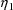
,
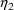
, etc. Their variance-covariance matrix is denoted by
and is called OMEGA in the NONMEM printout. The random
intraindividual effects are denoted by
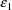
,
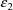
, etc. Their variance-covariance matrix is denoted by
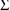
and is called SIGMA in the NONMEM printout.
Many scientists have worked closely with the NONMEM Project Group, and by using NONMEM and providing helpful feedback, have greatly contributed to its development. Many NONMEM users have on occasion also shared their experience. We hope that the user-community will continue to feel free to report successes and failures so that the program can be further evaluated and modified in ways from which everyone can benefit.
IMSL has also greatly contributed to NONMEM development by entering into an agreement with the NONMEM Project wherein some IMSL proprietary software can be incorporated into the NONMEM system.
The examples used in this document involve theophylline data that was kindly contributed for this purpose by Drs. Sidney Riegelman and Robert Upton.
Financial support for the development of NONMEM has come from NIH grants GM-16496 and GM-26676 and from license fees paid by NONMEM users to the University of California. Computing assistance has been obtained from The Health Sciences Computing Facility, UCLA, supported by NIH Special Research Resources grant RR-3.